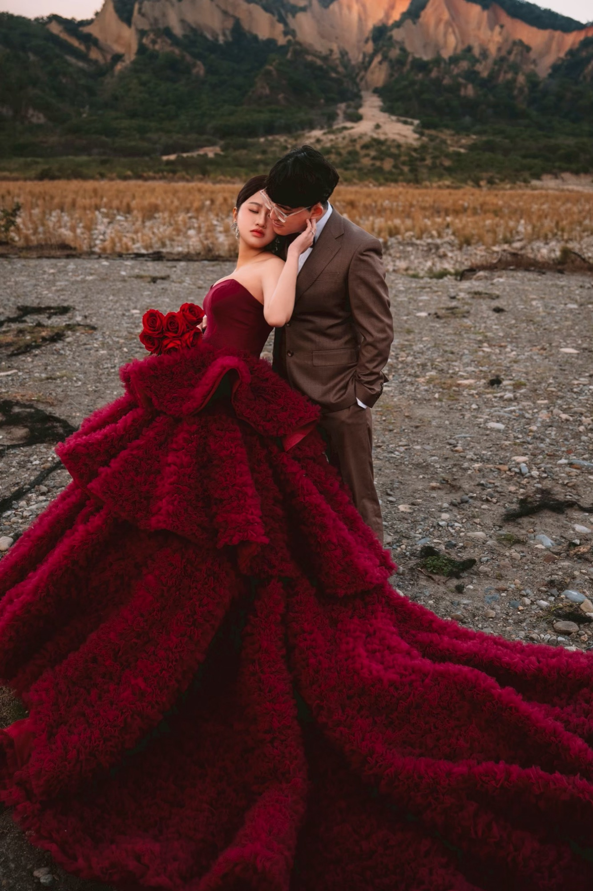
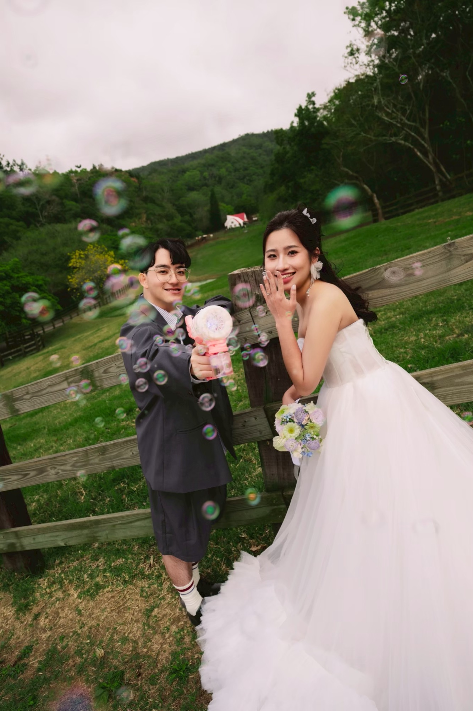
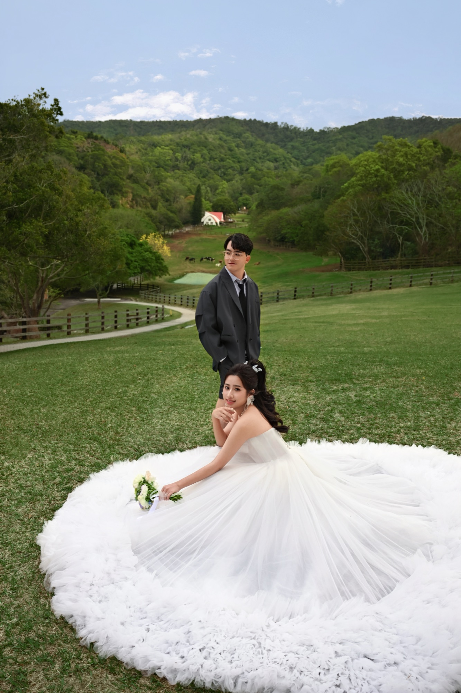
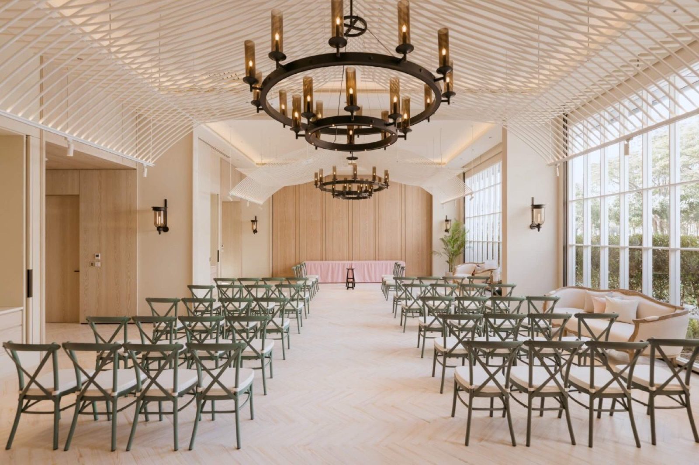
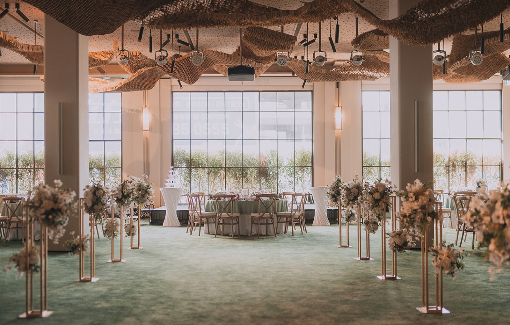

Moments
我們的故事
婚紗照｜每一張，都是我們故事的一部分



Schedule
時間安排
儀式與婚宴時間分開，歡迎您全程參與
迎賓・儀式
10:00
賓客入場
請提前抵達會場，稍作休息、入座
10:30
婚禮儀式準時開始
證婚儀式將準時開始，敬請提早入座

婚宴・午宴
11:30
賓客入席
請依桌次入座，稍候片刻
12:10
婚宴準時開席
婚宴將準時開席，感謝您的準時蒞臨

Venue
婚禮地點
台中 蘭克斯特 Lancaster House，期待與您相見
RSVP
敬邀您的出席
請於 2027/2/28 前回覆，讓我們為您預留座位。
表單後端尚未設定完成，目前無法送出回覆，請直接聯繫新人，或稍後再試一次。
已收到您的回覆
謝謝您撥空回覆，我們期待與您相見 ♡
Good To Know
給您的小叮嚀
交通
南下：國道一號大雅交流道下，左轉環中路直行，再右轉松竹路三段、崇德路二段即可抵達。
北上：國道一號中港交流道下，直行台灣大道，左轉文心路三段、崇德路二段即可抵達。
高鐵：烏日站轉搭捷運淺綠線至北屯站，步行或搭公車約 10–15 分鐘即達。
蘭克斯特步行 5 分鐘即達中科大飯店，外地賓客住宿方便。
停車
特約停車場「松竹停車場」：新人招待前 4 小時，超過部分每小時 20 元。
隔壁「日月亭停車場」每小時 60 元（無特約優惠），松竹車位客滿時可作備案。
服裝
無特定 dress code，誠摯邀請您以淺色、明亮色系穿搭前來，一起留下美好合影。
兒童 / 其他
⟨如有其他叮嚀，於此補充⟩。